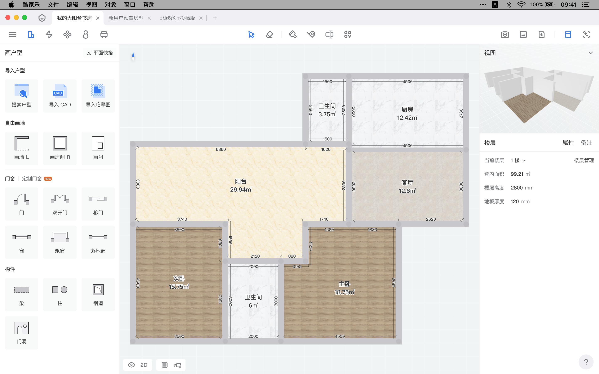

@王瑞青
最近发现了躺平设计家、酷家乐一类的在线 3D 设计软件（垂直领域），很感兴趣，做了一些研究。现在本人做了一个 macOS 客户端为主的 Redesign 分享给大家（以酷家乐家装编辑软件客户端为主）。
文章目录如下：

使用与学习
我先试用了躺平设计家，并学习了部分视频教程。之后又使用了酷家乐（并学习了水电部分）。当时最大的感受是酷家乐有行业库的概念封装以及自适应组件，觉得很酷，out-of-the-box 啊。
学习躺平家教程的时候，本人以自己为假象客户，自己做家装设计师为自己服务，来体验软件。做了个户型，如下图：
鸟瞰图：

主卧：

次卧儿童房：

初次使用，初始化的项目渲染的效果还是蛮好的，而且还支持 4K，VR 全景图，于是就认真看了看教程，学了下。出于兴趣，在网上搜索相关信息，发现了酷家乐。
于是本人就又细致的体验了一番酷家乐，并把体验感受录入在线 3D 设计软件体验收集。
并且本人对这些记录进行整理分类，形成[在线 3D 设计软件体验整理](在线 3D 设计软件体验整理)。
上表问题大致归纳为下图：

本人基于对 Figma 的了解，决定挑战一下重设计一款垂直领域的在线 3D 设计软件。毕竟好久没练手了。
根据上面的反馈总结，和本人的设计倾向，归纳出以下重设计目标：
- 选择酷家乐而不是躺平家进行重设计
- 提升酷家乐 macOS 的本地应用体验
- 兼顾其它平台体验
- 优化设计界面整体结构
- 提升交互/视觉一致性
- 提升设计界面的效率，优化键盘的体验
- 努力做到 Figma 级别的产品设计
你可访问以下地址查看相关资源：
Figma 设计稿：Kujiale Redesign - Main
Figma 交互原型：Kujiale Redesign - Main - Prototype
交互原型点击录播视频：部分交互演示
开干前
图标也是体验的一部分
开工前，首先先干一件事，看下图：
桌面图标截图-旧版：

改成以下：
桌面图标截图-新版：

OK！和谐了。macOS 上国产应用/国外应用的图标都很少注意 macOS 的图标规范。（Apple 很多 App 都采用了标准圆，但并非必须，此处本人依习惯改成圆的）。
梳理原产品结构
为了了解酷家乐的产品，我又看了酷家乐的教学视频。并且学到了一些除了软件以外的一些家装知识（此处给酷家乐点赞）。边学边用，我把几乎酷家乐的个人版的所有界面都体验了一遍。
现在给出下图的产品结构大纲：

其中酷家乐进入不同的行业模式，核心功能和核心菜单会稍有不同。
完整版脑图太大了，以下给出的功能结构详细的脑图：原版功能结构-各个模式，可在线观看，可下载。
方案介绍
本人接下来将按以下篇目来详解一下我的 Redesign 方案
- 贴近系统篇
- 整体结构篇
- 行业模式篇
- 视图导航篇
- 鼠标 & 键盘篇
- 微交互篇
- 其它篇
系统贴近篇
我像 Chrome
原版：

工作台-新版：

对比：
- 新版的系统窗口操作按钮是统一的，无论在工作台，还是打开设计方案，窗口的关闭、缩小、放大从视觉上交互式都是统一的（软件内），同时也和 macOS 系统是吻合的
- 新版的标签切换一直在顶部，避免了原版：工作台页面切换标签页在底部，打开设计方案后在顶部，而且打开设计方案后，新设计按钮又没有了。改完后切换标签的体验像 Chrome
- 新版的顶部标签右侧有个常驻的加号按钮，同时工作台页面内三个字模块的右上角也有快捷的新设计按钮，既有常驻的也有符合工作流程的（列表页表头上加添加按钮）。新建设计的体验像 Chrome 打开新标签页
- 新版去除了历史记录的倒退前进功能，让 macOS 客户端专注于设计方案本身，其它需要浏览的地方，通过跳转本地浏览器和引导下载 App 实现。避免一些乱七八糟的多窗口多标签的现象
- 新版的帮助中心常驻右下角，使用统一的菜单，位置更统一，触达更直接。避免了原版乱七八糟的帮助模块（有的是小窗口，有的是帮助中心，有的是客服）
- [存疑] 新版简化了一级导航，更贴近移动端的结构
- [存疑] 团队项目和新团队的部分是在未体验企业版的情况下以小作坊工作模式设计的。需求存疑
通过 Figma 那种对 Chrome 的体验的复刻，降低了用户从浏览器迁移的成本，同时日常使用效率也更高（符合用户习惯）。
系统和内页菜单
上面说到在窗口标签页的体验上通过复刻 Chrome，降低了使用成本。该软件作为 macOS 客户端，虽然内容是基于网页浏览器的，但也是可以使用系统菜单功能的。
macOS 的菜单栏是常驻屏幕顶部的，利用菲茨定律，点击是很方便的。
同时 Web 里的设计界面也可以同步一分菜单（细微差别）（称之为内页菜单），可以搜索，方便查找功能。
在上面酷家乐原版功能结构-大纲的脑图里，有记录各种操作，以及快捷键。对这些快捷键整理，按以下类目整理：

完整脑图地址：新版-系统菜单 & 内页菜单
以下放一些内页菜单的图片，你也可以访问Figma - 内页菜单查看所有内页菜单。本篇内容可配合快捷键篇浏览。
PS：如果不能享受到原生软件的优势，那何不用 Chrome 生成单独窗口的快捷链接呢？（实际上我对很多网站都是这样做的，参见图标也是体验的一部分）。这也是我在设计中采用系统菜单的原因之一。
内页菜单-例子：

以下是内页菜单详解：
内页菜单-文件

解释：
- 自动保存不再频繁提示，采用类似 Figma 的策略，一直静默的自动保存，只有保存出错才提示用户。用户按 ⌘S 后，会提示：酷家乐会自动保存你的设计方案
- 用户可以手动保存版本（视为重要版本），需要填写版本信息
- 历史版本可以重新设计一版（比如可以显示缩略图），此部分略
内页菜单-编辑

解释
- 通用的、高频的编辑操作
- 软件常用的工具类按钮（此处可根据数据、灵活调整，仅做参考）
内页菜单-视图

解释：
- 包含
- 主要视图的缩放
- 对象清理和隐藏显示操作（包含定制对象）
- 视图显示模式调整
- 左面板（核心功能）右面板（辅助面板）
- 在菜单中可以方面的集中找到有关视图的常用选项
- 增加了快捷键的曝光，有利于用户养成使用快捷的习惯
内页菜单-对象

解释：
- 包含常用的对象操作
- 替换和编辑（地台设计、吊顶设计、墙壁设计、开启定制等（随着选中对象不同而变）
- 移动缩放、翻转选择、对齐
- 组操作、显示和锁定
- 不包含不常用的因对象不同而出现的操作，那一部分交给页面内的智能菜单，避免菜单膨胀
内页菜单-帮助和账户

解释
- 充当快捷入口（帮助可在右下角找到，账户设置可在工作台点击头像）
- 设置的快捷键是 macOS 统一的 ⌘, （利用系统习惯）
布局结构篇
在调整这个模块的时候，我同时参考了躺平设计家，设计云等同类软件（虽然神似，但有很多差异）（我甚至还研究了一下 SketchUp）。
整体结构
设计界面-躺平家：

设计界面-设计云：

设计界面-酷家乐原版：

设计页面-新版：

先看一下对比大纲的脑图：

解释
- 把核心功能模块的入口放到界面左上角，取消浮动收起按钮。核心菜单按钮可以切换菜单，也可以收起/展开核心面板（无需每次都悬停等待浪费时间，避免菜单浮窗组合覆盖页面）。减少左侧面积浪费。支持快捷键（参见鼠标 & 快捷键篇）
- 核心功能模块的入口和其二级功能导航的热区离得近
- 精简核心菜单中非编辑相关菜单，文件保存、历史管理、方案信息管理等收入左侧菜单里（参见上文菜单篇）
- 非编辑类的渲染、图册、导出/下载放入右侧辅助菜单里（让核心菜单更专注）；然后右侧再加上辅助面板相关次要操作
- 顶部核心菜单区域仅保留核心编辑类操作按钮，并加入智能菜单（选择不同对象即可出现）（智能菜单是浮动还是固定区域可考虑设为设置项）
- 增加右侧辅助面板宽度，缓解信息显示紧张，配合导航视图的缩小可更方便显示更多属性信息（导航视图切换支持快捷键，参见视图导航篇、鼠标 & 快捷键篇）
- 视图区域去除缩放操作（本地 macOS 端，使用触摸板即可），只保留核心操作。优化快捷键（参见鼠标 & 快捷键篇）
- 减少无意义的卡片空隙，去除不协调的顶部和左侧的半透明（用户通过调整核心面板/辅助面板的显示隐藏和导航视图模式来增加可视区域（参见视图导航篇））
通过这些改动，让软件结构更加紧凑明了，提升了结构统一性。降低一些交互对用户的干扰，配合快捷键可帮助用户建立更结构化的心理模型。降低使用其它模式下类似结构的流程时的熟悉成本（参见行业模式篇）。同时提升了界面的简洁度，更显专业感。
局部结构
局部结构-素材库：

局部结构-我的：

解释：
- 素材库/我的/楼层属性等标题后后面的二级导航表现一致，且节约空间
- 统一搜索入口及表现形式
行业模式篇
行业模式其实就是 Advance Mode 高级模式（地台设计、材质编辑、剖面编辑等也算）。可以让用户专注于某一类定制操作，同时保持默认模式的简洁（降低入门成本及日常使用成本）。
目前主要有五种模式及一些附属模式，如下：

完整脑图：原版-核心和定制菜单
多数定制的核心菜单下都会有定制菜单，形成两层菜单的景象。我按照素材（产品/组件/材质等）、我的、快搭（智能设计、全局替换、整体风格、自动水电等）等一级概念，收纳削减一部分定制菜单到核心功能面板里。移除部分菜单，如硬装里的设计模版（默认模式已有快搭）。将其余菜单收纳到更多按钮中。
以下以几个模式为例：
模式-平面快搭-原版：

模式-平面快搭-新版：

模式-全屋硬装-原版：

模式-全屋硬装-新版：

模式-全屋家具-原版：

模式-全屋家具-新版：

解释
- 各种模式的左上角都有完成返回按钮（参见上篇局部结构）
- 统一退出机制，且和中间的菜单分离
- 同时也让用户感知到进入模式中，但界面上又不会差距太大，降低干扰
- 退出后可快速切换其它定制模式
- 其它结构（二级导航，搜索）各个模式间基本统一，其形式和默认模式也类似（参见上篇局部结构）
- 定制模式中，精简操作区内容，分化操作流
- 让更智能的操作集合到第三个智能面板里，核心操作区更专注于手工定制
- 生成等操作会自动区分全屋家具/厨卫，导出按钮也会自动选择对应的种类
视图导航篇
我把视图的操作主要分为：
- 软件界面的操作
- 隐藏/显示界面
- 主副视图的操作
- 视图显示的调整
- 视图背景的调整
- 视图显示对象的调整
- 视图显示的高级调整
给出以下脑图：

接下来分视图高级菜单、导航视图菜单、单房间模式三块来细说。
视图高级菜单
新增-视图菜单：

解释
- 常用的显示设置依旧放在主视图的左下角，可以快速使用
- 把频率较低的主副视图的操作、视图显示的高级调整等放入辅助菜单的视图菜单里
- 缩放和适应画布可用触摸板和快捷键快速完成，在主视图区域隐藏
- 视图区域大小可以直接输入百分比，点击输入框是会有下拉选项提示 100%，200%，400%
导航视图菜单
下面着重讲一下主副视图的操作。导航小视图的下拉菜单包含部分视图菜单中和自己相关的内容：导航视图模式切换+交换主副视图。
下图为悬停后效果：

及两种显示模式：
视图菜单-弹性伸缩：

视图菜单-大图模式：

解释
- 弹性伸缩为默认视图模式，当属性面板的内容过多可以滑动时，在滑动时会自动向上覆盖住导航视图
- 鼠标离开后，3秒后导航视图会自动把属性面板往下推（但保留滑动位置），展开至原始大小
- 也可以直接悬停在导航视图上，导航视图会直接展开
- 大图模式为左右拆分主要视区（可悬浮在中间拖动调整大小），会自动隐藏核心面板和属性面板（可手动打开）
- 小图模式为弹性伸缩的极限值（两行标题高，88dp），可以悬停直接展开覆盖在属性面板（属性面板不会动），失去悬浮等激活操作后，自动收起，变为最小（这样可以强化属性面板，通过悬停召唤导航视图）
单房间模式
下面讲一下房间的切换操作：
视图菜单-单房间模式：

解释
- 主副视图的对象选择状态同步显示
- 默认不显示单房间模式（见前图，可以通过悬浮菜单看到单房间菜单），选择某房间的对象后（包含地台、墙壁、吊顶等）会出现单房间模式按钮，点击即进入该房间的单房间模式（进入单房间模式会隐藏其它房间，相当于聚焦模式）
- 当导航视图为2D，选中其中的房间会居中最大主视图中对应的房间，并弱化其它房间的显示
鼠标 & 键盘篇
设计类软件，最核心的操作就是鼠标编辑操作对象，调整视图等。
而键盘则主要用来提升操作效率。
视图控制
先来讲一下鼠标/键盘控制主视图。
我研究了一下酷家乐及同类软件的操作逻辑：主要就是键盘ADWS调整方向，QE调整高度。鼠标调整视角和旋转视角，滚轮拉近拉远。归纳出下图脑图：
原版-鼠标 & 键盘操作视图：

这里有个最大的和 macOS 冲突的地方就是没有很好的利用触控板的双指平面移动和捏合操作。显得非常违反直觉。考虑到和鼠标设备、Windows 的兼容，作出以下的优化方案：
新版-鼠标 & 视图操作：

解释
- 核心操作逻辑未变（点拽转视角，右击拖拽平移摄像头）
- 优化：双指平面移动=右击拖拽平移，捏合操作=滚轮
- 增加视角快速调节器（参见行业模式篇：模式-全屋硬装-新版，视图右上角），空格键快速复位默认视角（不自动适应画布）
- 增加相机设置里的调整参数，用类似渲染界面里的图示表示各项数据（并可直观调整）此处略
快捷键快速控制
快捷键上面的内容已有涉及，现做下汇总（并做了新增）：

解释
- 保留 macOS 系统的统一菜单管理快捷键
- 尊重常有的快捷键设计
- ⌘G，⇧⌘G 组操作；⌘A，⇧⌘A 选择操作；⇧⌘H 显示/隐藏和 ⌘L 锁定/解锁；
- 快捷键和位置相呼应，容易记忆学习
- ⌘12345 用于切换核心面板，⌘[ 用户打开/关闭核心面板；⌘] 用户打开/关闭辅助面板
- ⌘/ 用户打开最左侧的内页菜单并默认搜索；⌘\打开最右侧视图菜单并默认可输入画布百分比
- ⌘890 用于打开辅助菜单（渲染、图册、导出）
- 123456用来打开或切换视图相关操作，和视图左下角相呼应
- 1 显示隐藏、2 平面 3 立体、4 材质、5 相机、6 吸附适配
- 全屋硬装里将高级操作设定为 UIOP，临近在一起
- 合理重复使用一个按键
- 上图 234 按键的重复
- 三个导航视图切换使用 ⇧⌘V
- 重复利用 R 或 L 在不同模式下表达类似的作用， L 在平面快搭里是画区域，画户型里是画墙，全屋硬装里是画线
- 使用 Tab 切换子模式，比如选择产品/组件、标注是否带引线、画墙时墙线显示
- 使用 Z 表示测量和参考线（可用 Tab 在量线和量角间切换）
丰富的光标
酷家乐里画墙的时候，有一个加号和圆底光标，重复了。而且两个图标也重叠了，上面光标移动的时候，下面圆底还会有延迟现象（PS：另外，很多广标都糊了）。
本人依据各种状态为各类状态做了梳理，如下：
新版-光标的状态：

新版-光标的状态的图例如下：

这里需要注意的是，光标仅仅是对当前状态的一次细化，需要目标对象进行配合以及其它对象的配合（比如绘制线段时，端点的吸附）。
再对上图进行一下解释
- 激活状态类的多用箭头+图标，图标表示工具类型，箭头可以更精确的定位（定位点为箭头左上角）
- 拖动类的图标以重心为定位点，如拖动墙、拉伸对象的操作（因为方向有两边呀）
- 旋转、平移，也是以重心为定位点，所以从别的光标切换到此类光标时，位置会有所变动
- 吸取器略特殊，定位点为左下角
微交互篇
细化微交互主要目的：
- 充分利用鼠标的悬浮等操作中间态，降低界面本身的复杂度，精简核心界面
- 通过反馈、通过各种状态的细分界面为用户塑造更合理的心理模型
- 降低用户的等待等负面情绪
举部分例子：
- 主视图为 3D 鸟瞰、导航视图为平面时，此时移动摄像机，在鸟瞰视图中也可以把平面视图里的旋转轴心和摄像机的图标也同步过来。并在用户停止旋转视角 3 秒后消失。可以更直观的提示用户视图区域是如何旋转的。
- 一些重要状态的改变（用户主动），通过页面底部居中的浮动提示来告知用户（快速消失）
- 一些状态的改变（软件自动），通过页面底部居中的浮动提示来告知用户（快速消失）
- 当按住 ⇧ 激活框选状态时，光标变为箭头+虚线框（参见上文多状态光标）
- 平面布置模式，划区域功能，没有闭合区域时，最后一个点和起点间用虚线表示未闭合
- 3D 视图中选择了一面背景墙，此时切换到立面模式，可以直接进入该面的立面模式
- 画户型中，选择各类构件，这些按钮可以背景色改为淡蓝来体现激活状态
- 全屋家具/厨卫中选择定制对象，选择缩放。然后在属性框里激活宽深高输入框，此时主视图里对应的方向应该有箭头高亮显示，提示这边会因数字的改变而改变。如果用户想改变的是另一个方向，就可以很方便的知道，然后就点击输入框前面的方向锁定按钮进行切换
- 放置物体到别的对象上时，可以把别的对象的接触面加上一个线框，表示俩个物体接触了。也可以把相对位置参考标上（比如我在 3D 视图里摆放饰品）
未完待续...
其它篇
以上方案的内容只尝试解决我上面表格中记录的一部分内容。还有一些主题可成块的并未涉及，比如：
- 选择不同对象时的智能菜单和对应的属性面板
- 渲染和相册的结构（由于模块比较独立，可以模仿上文结构篇的处理手法，也可重新新设计，但要处理好渲染和相册的关系）
- 导出面板的设计（如何做到智能快捷？）
- 各个行业定制功能的详细设计
另外部分内容在 Figma 中，因为杂乱量小，没有写入文中。
抽空再更新此文。
总结
关于产品本身
这一轮下来，先算是对此类软件有了一些了解。简单的谈一下：
- 酷家乐、躺平设计师、设计云的主体功能和完整度都比较高，但总体上还是满同质化的（不过工具只是该类企业产品及服务的一环）
- 在核心功能和高级功能的分化上，三家各有特点。设计云作为后来者，在全屋硬装上有着独特理解
- 酷家乐和设计云在视觉和交互上略强，躺平家视觉上落后较多（视觉冗余太多了）
- 几家产品存在着明显的互相借鉴（这本身没问题），导致一些不好的交互也继承过去了，也不知是谁先抄的谁
- 酷家乐和躺平设计家的产品设计有着明显的历史遗留问题（后者更明显），酷家乐已有明显改善，新版比旧版好很多。同时，酷家乐也因此出现了割裂问题，不仅是交互本身的，甚至有技术导致的问题
- 国际化方面，躺平设计家的版本差异较大，作为一个领域专业软件，这很奇怪
关于本次 Redesign
总的而言：
- 基本完成 Redesign 目标
- 进行本次 Redesign 时，由于铺的太开，考虑的因素太多（因为想要系统性的进行大改），导致进度缓慢。后改为按点优化，并不要改动太大，进度就慢慢正常了
- 产品设计上有 Figma 的影子，但距离 Figma 的水准还差一点
- 设计风格上其实可以延续酷家乐，我图省事就精简了（效果也还不错，不过换皮肤都是小事），但本次设计风格上总体提升了一致性
- 部分功能因缺乏客户调研和数据，就先按直觉设计了，可能会有一小部分不合实际用户的需求
号外：资源放送
除了文章开头的在线地址外。本人公开此文附件：
另外本人再附送 Figma 的三张图：
这也是本人这次努力的目标！


Byebye 下期见。
20200318